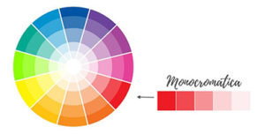
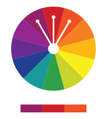
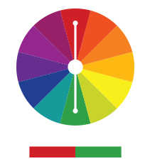
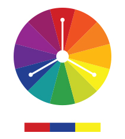
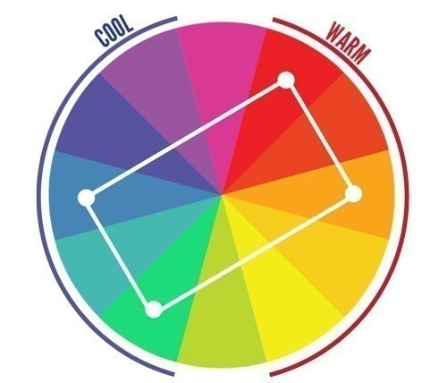

Nome completo: Kadyja Pontin Bueno
Tipo de harmonia cromática : Harmonia monocromática
Cores utilizadas no site: #F1F1F1,#333,#FF7F00,#FFFFFF,FFD580
O círculo cromático é uma representação visual das cores, organizada em um círculo de forma que ilustra a relação entre as cores primárias, secundárias e terciárias. Ele é uma ferramenta fundamental no estudo de harmonias cromáticas, pois permite entender como as cores se relacionam e podem ser combinadas de maneira harmônica.
Existem várias formas de combinar as cores com base no círculo cromático. Abaixo estão algumas das principais harmonias cromáticas:
A harmonia monocromática utiliza variações de uma única cor, com diferentes tons e saturações, criando uma paleta de cores suave e harmoniosa.
A harmonia análoga usa cores que estão lado a lado no círculo cromático. Elas criam combinações suaves e agradáveis, como o azul, o verde-azulado e o verde.
A harmonia complementar é formada por duas cores que estão em posições opostas no círculo cromático, como o vermelho e o verde. Essa combinação cria um contraste forte e vibrante.
A harmonia triádica utiliza três cores que estão mediantes no círculo cromático. Por exemplo, o vermelho, o azul e o amarelo. Essa combinação é equilibrada e vibrante.
A harmonia tetrádica utiliza quatro cores, organizadas em dois pares de cores complementares. Isso oferece uma ampla gama de opções de cores para criar um design equilibrado e dinâmico.
